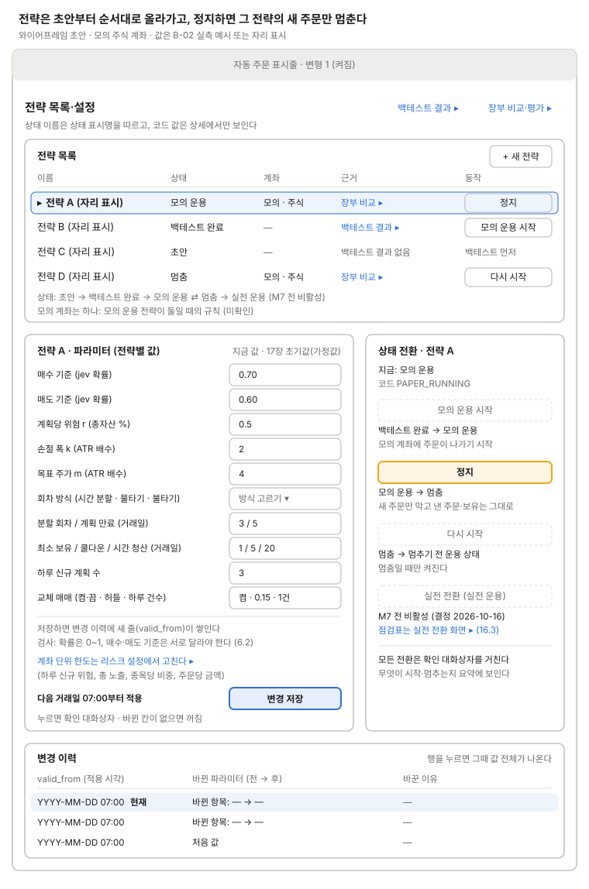

전략 목록·설정
전략 상태와 파라미터를 다룬다.

위에서 전략을 고르면 아래 왼쪽에서 파라미터를 고치고, 오른쪽에서 상태를 바꾸며 변경 이력(valid_from)을 본다. 실전 전환 버튼은 모의 운용과 실전 전환 기준을 거쳐도 M7 전까지는 꺼져 있다. 정지(멈춤)는 그 전략의 새 주문만 막고, 낸 주문과 보유는 그대로 둔다. 모든 전환과 변경 저장은 확인 대화상자를 거치고, 저장한 파라미터는 다음 거래일 07:00부터 적용한다. 폼에는 전략별 값만 두고, 계좌 단위 한도는 리스크 설정에서 고친다.
쓰는 공통 UI
화면 틀 · 자동 주문 표시줄 (평소 변형 1) · 확인 대화상자 (전략 상태 전환·멈춤, 전략 파라미터 저장) · 상태 표시명 (전략)
상태
| 상태 | 보일 것 |
|---|---|
| 평소 | 표시줄 변형 1. 상태는 표시명(초안, 백테스트 완료, 모의 운용, 멈춤, 실전 운용), 행마다 그 상태에서 갈 수 있는 동작 하나 |
| 모의 운용 시작 확인 | 확인 대화상자: 백테스트 완료 → 모의 운용, 모의 계좌에 주문이 나가기 시작 |
| 정지 확인 | 확인 대화상자: 모의 운용 → 멈춤, 이 전략의 새 주문만 막히고 낸 주문·보유는 그대로 |
| 다시 시작 확인 | 확인 대화상자: 멈춤 → 멈추기 전 운용 상태, 다음 주문부터 다시 나감 |
| 실전 전환 | M7 전 비활성. 점검표는 실전 전환 화면 링크로만 |
| 백테스트 결과 없음(초안) | "모의 운용 시작" 대신 "백테스트 먼저". 근거 칸에 "백테스트 결과 없음" |
| 변경 저장 확인 | 확인 대화상자: 바뀐 값의 전 → 후, 적용 시점 "다음 거래일 07:00부터" |
| 바뀐 칸 없음 | 변경 저장 버튼 꺼짐. 바뀐 칸은 테두리로 표시 |
| 검사 실패 | 칸 아래 오류: 확률이 0~1 밖, 매수 기준과 매도 기준이 같음 |
| 저장 실패·다른 창에서 먼저 바뀜 | 저장하지 않고 최신 값과 바뀐 항목을 보인 뒤 다시 확인받음 |
| 저장 뒤 적용 전 | 변경 이력 맨 위 행에 "적용 예정"과 적용 시각 |
| 자동 주문 꺼짐 | 표시줄 변형 2 또는 3. 모의 운용 전략도 주문이 나가지 않는다고 목록에 표시 |
| 모의 운용 전략이 둘 | 규칙 미정(모의 계좌는 하나). 결정 필요 |
화면 규칙
- 보여 줄 것: 상태(
DRAFT→BACKTESTED→PAPER_RUNNING(⇄ PAUSED) →LIVE_RUNNING), 파라미터와 변경 이력 - 데이터:
strategies,strategy_params - 주의: 실전으로 가려면 모의 운용을 거쳐야 한다. M7 전에는 실전 전환을 비활성으로 둔다(결정 2026-10-16)